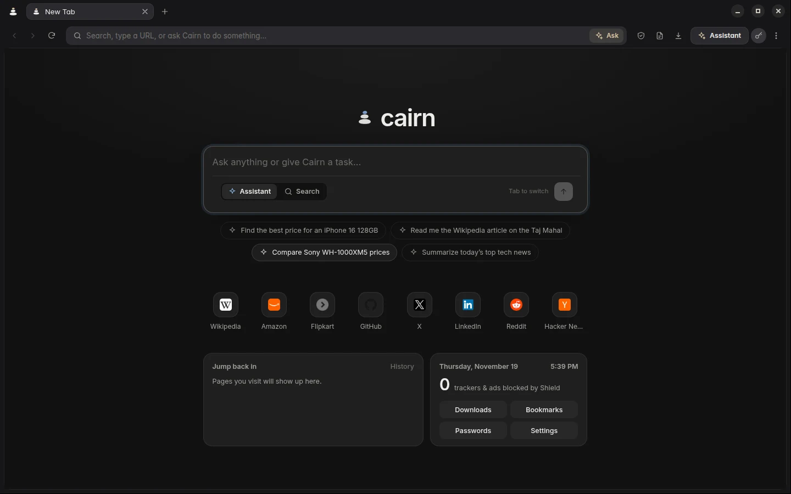

Download · v2.7.0
Get Cairn for your computer.
Free to download. AI is built in, so there's nothing to set up: install, open and ask.

Detected for you
Android
Android 8.0 or later · full browser
SHA-256 7a40597d25ee65c12cfb57d3d909fa979d639d321d00ca4355cbf122169d5090
Installing the APK: Android will ask you to allow installs from your browser or file manager the first time. Cairn is not yet on the Play Store; you can verify the file with the SHA-256 checksum above.
Set up in three steps
From download to first task.
Add your AI key
Open Settings → AI and paste a free key from Groq or NVIDIA. Keys stay encrypted on your device.
Create your account
Sign up with email and password, then add a passkey for one-tap sign-in. An account is only needed for phone pairing and sync.
Pair your phone
Install Cairn for Android, open Settings → Phone in the browser and scan the QR code. Approvals and files now go straight to your phone.
System requirements
Lightweight where it counts.
| Minimum | Recommended | |
|---|---|---|
| Memory | 4 GB RAM | 8 GB RAM or more |
| Disk | 500 MB free | 1 GB free |
| Internet | Required for AI and shopping | Broadband |
| Read aloud | Built-in English voice (cloud) | OS Hindi voice installed for Hindi articles |
| Phone | Android 8.0, fingerprint or screen lock | Android 12 or later |